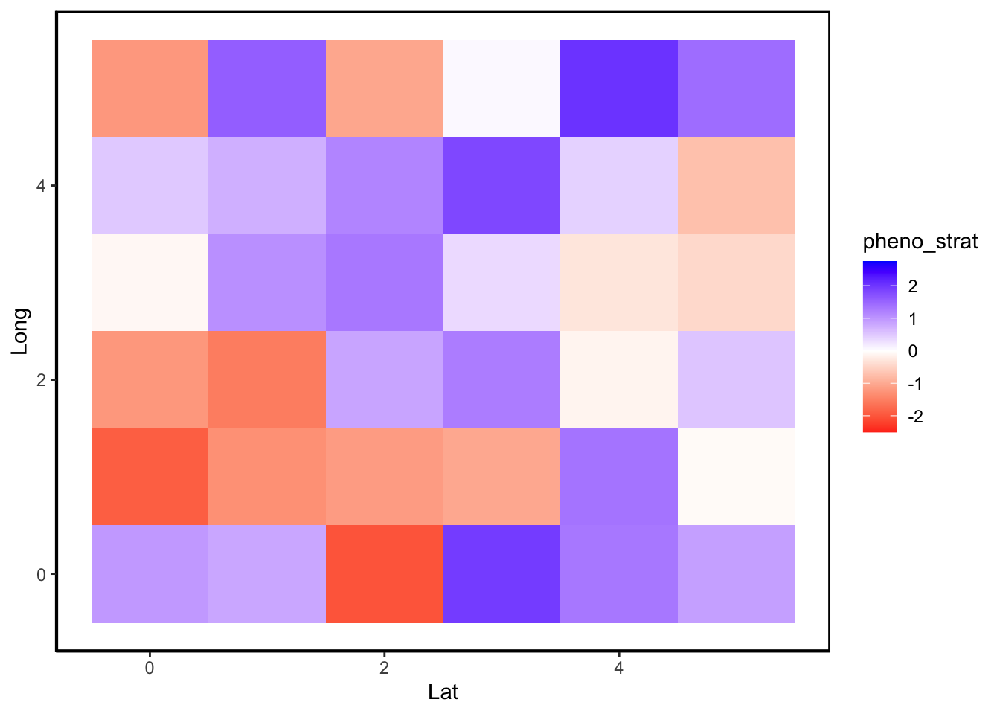
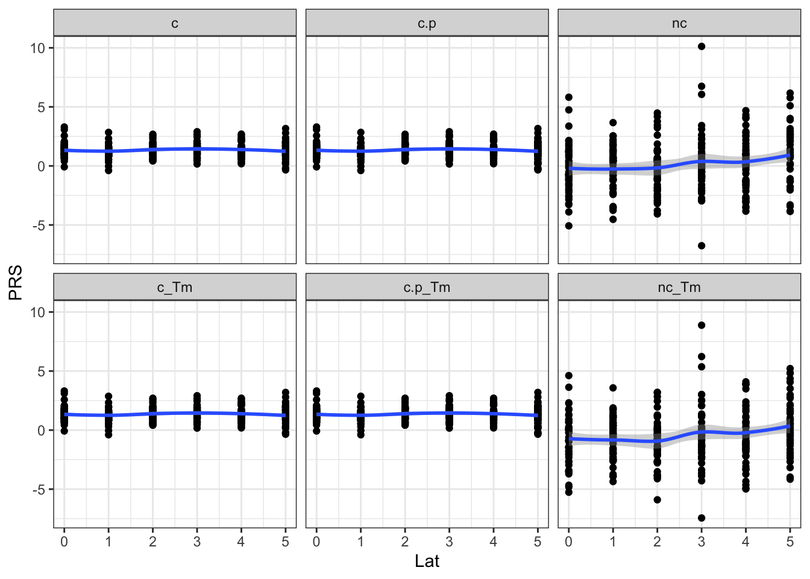
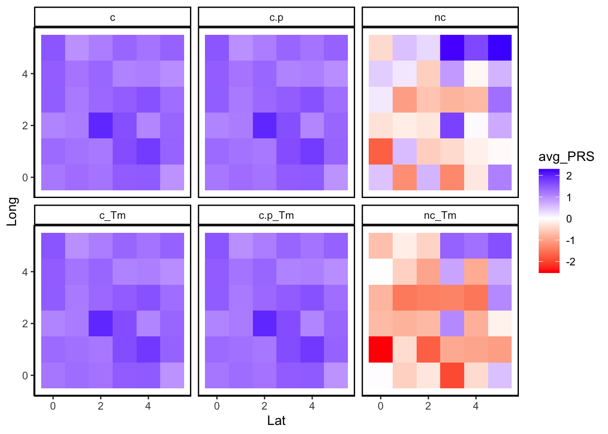
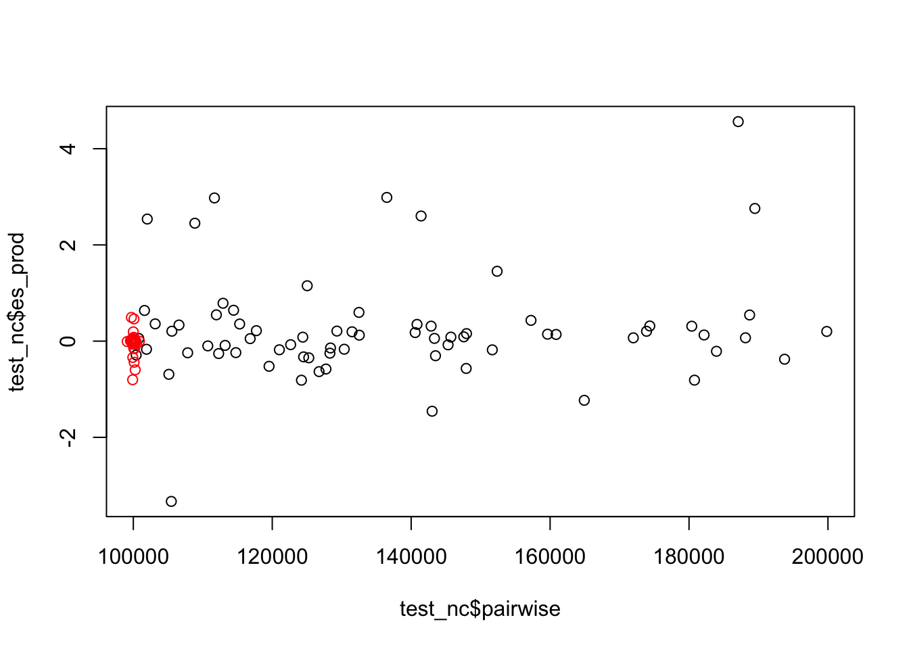
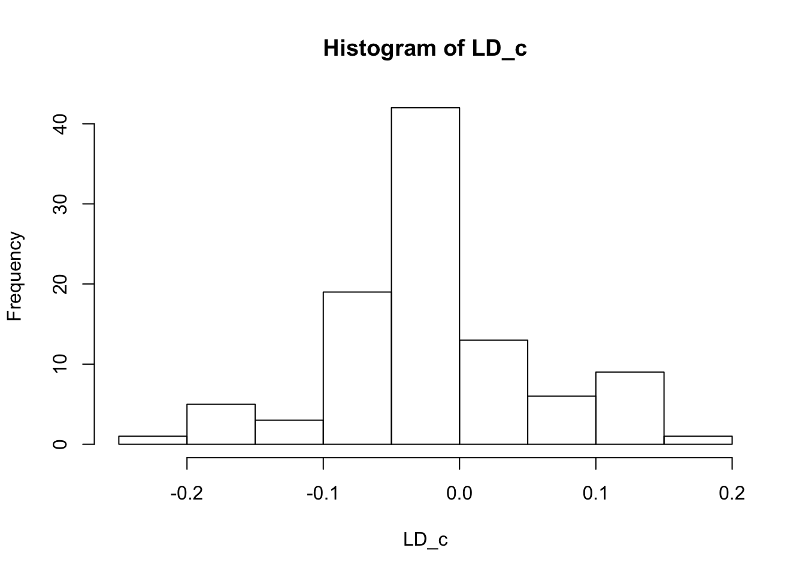

Last updated: 2021-06-22
Checks: 6 1
Knit directory: polygenic_adaptation_stratification/analysis/
This reproducible R Markdown analysis was created with workflowr (version 1.6.2). The Checks tab describes the reproducibility checks that were applied when the results were created. The Past versions tab lists the development history.
Great! Since the R Markdown file has been committed to the Git repository, you know the exact version of the code that produced these results.
Great job! The global environment was empty. Objects defined in the global environment can affect the analysis in your R Markdown file in unknown ways. For reproduciblity it’s best to always run the code in an empty environment.
The command set.seed(20201015) was run prior to running the code in the R Markdown file. Setting a seed ensures that any results that rely on randomness, e.g. subsampling or permutations, are reproducible.
Great job! Recording the operating system, R version, and package versions is critical for reproducibility.
Nice! There were no cached chunks for this analysis, so you can be confident that you successfully produced the results during this run.
Using absolute paths to the files within your workflowr project makes it difficult for you and others to run your code on a different machine. Change the absolute path(s) below to the suggested relative path(s) to make your code more reproducible.
| absolute | relative |
|---|---|
| /Users/jenniferblanc/polygenic_adaptation_stratification/output/Simulate_Genotypes/SimpleGrid/E1/C1/genos-gwas_common | ../output/Simulate_Genotypes/SimpleGrid/E1/C1/genos-gwas_common |
| /Users/jenniferblanc/polygenic_adaptation_stratification/output/Simulate_Genotypes/SimpleGrid/E1/C1/genos-test_common | ../output/Simulate_Genotypes/SimpleGrid/E1/C1/genos-test_common |
| ~/polygenic_adaptation_stratification/output/Simulate_Genotypes/SimpleGrid/E2/genos.pop | ../output/Simulate_Genotypes/SimpleGrid/E2/genos.pop |
| ~/polygenic_adaptation_stratification/output/PRS/SimpleGrid/E1/C1/h2-0/env-0.0/genos-gwas_common.nc.betas | ../output/PRS/SimpleGrid/E1/C1/h2-0/env-0.0/genos-gwas_common.nc.betas |
| ~/polygenic_adaptation_stratification/output/PRS/SimpleGrid/E1/C1/h2-0/env-0.0/genos-gwas_common.c.betas | ../output/PRS/SimpleGrid/E1/C1/h2-0/env-0.0/genos-gwas_common.c.betas |
Great! You are using Git for version control. Tracking code development and connecting the code version to the results is critical for reproducibility.
The results in this page were generated with repository version 709d276. See the Past versions tab to see a history of the changes made to the R Markdown and HTML files.
Note that you need to be careful to ensure that all relevant files for the analysis have been committed to Git prior to generating the results (you can use wflow_publish or wflow_git_commit). workflowr only checks the R Markdown file, but you know if there are other scripts or data files that it depends on. Below is the status of the Git repository when the results were generated:
Ignored files:
Ignored: .DS_Store
Ignored: .Rhistory
Ignored: .Rproj.user/
Ignored: .snakemake/
Ignored: code/.DS_Store
Ignored: code/Debug/.DS_Store
Ignored: code/PGA_test/.DS_Store
Ignored: code/Snakefiles/.DS_Store
Ignored: data/.DS_Store
Ignored: data/projection_example/
Ignored: output/Calculate_Tm/4PopSplit/E1/
Ignored: output/Calculate_Tm/4PopSplit/E10/
Ignored: output/Calculate_Tm/4PopSplit/E2/
Ignored: output/Calculate_Tm/4PopSplit/E3/
Ignored: output/Calculate_Tm/4PopSplit/E4/
Ignored: output/Calculate_Tm/4PopSplit/E5/
Ignored: output/Calculate_Tm/4PopSplit/E6/
Ignored: output/Calculate_Tm/4PopSplit/E7/
Ignored: output/Calculate_Tm/4PopSplit/E8/
Ignored: output/Calculate_Tm/4PopSplit/E9/
Ignored: output/Calculate_Tm/SimpleGrid/
Ignored: output/PGA_test/4PopSplit/E1/
Ignored: output/PGA_test/4PopSplit/E10/
Ignored: output/PGA_test/4PopSplit/E2/
Ignored: output/PGA_test/4PopSplit/E3/
Ignored: output/PGA_test/4PopSplit/E4/
Ignored: output/PGA_test/4PopSplit/E5/
Ignored: output/PGA_test/4PopSplit/E6/
Ignored: output/PGA_test/4PopSplit/E7/
Ignored: output/PGA_test/4PopSplit/E8/
Ignored: output/PGA_test/4PopSplit/E9/
Ignored: output/PGA_test/SimpleGrid/
Ignored: output/PRS/4PopSplit/E1/
Ignored: output/PRS/4PopSplit/E10/
Ignored: output/PRS/4PopSplit/E2/
Ignored: output/PRS/4PopSplit/E3/
Ignored: output/PRS/4PopSplit/E4/
Ignored: output/PRS/4PopSplit/E5/
Ignored: output/PRS/4PopSplit/E6/
Ignored: output/PRS/4PopSplit/E7/
Ignored: output/PRS/4PopSplit/E8/
Ignored: output/PRS/4PopSplit/E9/
Ignored: output/PRS/SimpleGrid/
Ignored: output/Run_GWAS/
Ignored: output/Simulate_Genotypes/4PopSplit/E1/
Ignored: output/Simulate_Genotypes/4PopSplit/E10/
Ignored: output/Simulate_Genotypes/4PopSplit/E2/
Ignored: output/Simulate_Genotypes/4PopSplit/E3/
Ignored: output/Simulate_Genotypes/4PopSplit/E4/
Ignored: output/Simulate_Genotypes/4PopSplit/E5/
Ignored: output/Simulate_Genotypes/4PopSplit/E6/
Ignored: output/Simulate_Genotypes/4PopSplit/E7/
Ignored: output/Simulate_Genotypes/4PopSplit/E8/
Ignored: output/Simulate_Genotypes/4PopSplit/E9/
Ignored: output/Simulate_Genotypes/SimpleGrid/
Ignored: output/Simulate_Phenotypes/4PopSplit/E1/
Ignored: output/Simulate_Phenotypes/4PopSplit/E10/
Ignored: output/Simulate_Phenotypes/4PopSplit/E2/
Ignored: output/Simulate_Phenotypes/4PopSplit/E3/
Ignored: output/Simulate_Phenotypes/4PopSplit/E4/
Ignored: output/Simulate_Phenotypes/4PopSplit/E5/
Ignored: output/Simulate_Phenotypes/4PopSplit/E6/
Ignored: output/Simulate_Phenotypes/4PopSplit/E7/
Ignored: output/Simulate_Phenotypes/4PopSplit/E8/
Ignored: output/Simulate_Phenotypes/4PopSplit/E9/
Ignored: output/Simulate_Phenotypes/SimpleGrid/
Unstaged changes:
Modified: code/Simulate_Genotypes/generate_genotypes_4PopSplit.py
Note that any generated files, e.g. HTML, png, CSS, etc., are not included in this status report because it is ok for generated content to have uncommitted changes.
These are the previous versions of the repository in which changes were made to the R Markdown (analysis/Plot_SimpleGrid.Rmd) and HTML (docs/Plot_SimpleGrid.html) files. If you’ve configured a remote Git repository (see ?wflow_git_remote), click on the hyperlinks in the table below to view the files as they were in that past version.
| File | Version | Author | Date | Message |
|---|---|---|---|---|
| Rmd | 709d276 | jgblanc | 2021-06-22 | wflow_publish(c(“analysis/Plot_4PopSplit.Rmd”, “analysis/Plot_SimpleGrid.Rmd”)) |
| Rmd | c53d994 | jgblanc | 2021-06-16 | change clumping |
| html | d909724 | jgblanc | 2021-06-15 | Build site. |
| Rmd | 64a812d | jgblanc | 2021-06-15 | wflow_publish(c(“analysis/Plot_4PopSplit.Rmd”, “analysis/Plot_SimpleGrid.Rmd”, |
| Rmd | b5fddce | jgblanc | 2021-06-14 | please merge |
| Rmd | 4041a73 | jgblanc | 2021-06-12 | clumping still broken |
| Rmd | c0fd2a7 | jgblanc | 2021-06-10 | hoping this syncs |
| Rmd | 4675bb8 | jgblanc | 2021-06-08 | slimmed down 4PopSplit |
| Rmd | 2fa0a33 | jgblanc | 2021-06-04 | finished lat-long pipeline |
Mod <- read.plink("../output/Simulate_Genotypes/SimpleGrid/E1/C1/genos-gwas_common.cmpruned.b")
M <- as.matrix(Mod$genotypes)
cov_mat <- xxt(M)
myE <- eigen(cov_mat)
pops <- fread("~/polygenic_adaptation_stratification/output/Simulate_Genotypes/SimpleGrid/E2/genos.pop")
colnames(pops) <- c("IID", "#FID", "Pop", "Lat", "Long")
df <- as.data.frame(cbind(myE$vectors[,1], myE$vectors[,2], Mod$fam[,1]))
colnames(df) <- c("PC1", "PC2", "IID")
df <- inner_join(df, pops)Joining, by = "IID"df$PC1 <- as.numeric(as.character(df$PC1))
df$PC2 <- as.numeric(as.character(df$PC2))
ggplot(df, aes(x=PC1, y=PC2, color = Lat)) + geom_point() + theme_classic()
| Version | Author | Date |
|---|---|---|
| d909724 | jgblanc | 2021-06-15 |
No phenotypic difference across Latitude
phenos <- fread("../output/Simulate_Phenotypes/SimpleGrid/E1/C1/h2-0/env-0.0/genos-gwas_common.phenos.txt")
df <- suppressMessages(inner_join(phenos, pops))
ggplot(data = df, aes(Lat, pheno_strat)) + geom_point() + geom_smooth() + theme_bw() + ylab("Phenotype")`geom_smooth()` using method = 'loess' and formula 'y ~ x'
| Version | Author | Date |
|---|---|---|
| d909724 | jgblanc | 2021-06-15 |
ggplot(df, aes(x = Lat, y = Long, fill = pheno_strat)) + geom_tile() + theme_classic() + theme(panel.border = element_rect(colour = "black", fill=NA, size=1)) + scale_fill_gradient2(low = "red", high = "blue", mid = "white")
| Version | Author | Date |
|---|---|---|
| d909724 | jgblanc | 2021-06-15 |
2 unit phenotypic difference across Latitude
phenos <- fread("../output/Simulate_Phenotypes/SimpleGrid/E1/C1/h2-0/env-0.5/genos-gwas_common.phenos.txt")
df <- suppressMessages(inner_join(phenos, pops))
ggplot(data = df, aes(Lat, pheno_strat)) + geom_point() + geom_smooth() + theme_bw() + ylab("Phenotype")`geom_smooth()` using method = 'loess' and formula 'y ~ x'
| Version | Author | Date |
|---|---|---|
| d909724 | jgblanc | 2021-06-15 |
ggplot(df, aes(x = Lat, y = Long, fill = pheno_strat)) + geom_tile() + theme_classic() + theme(panel.border = element_rect(colour = "black", fill=NA, size=1)) + scale_fill_gradient2(low = "red", high = "blue", mid = "white")
| Version | Author | Date |
|---|---|---|
| d909724 | jgblanc | 2021-06-15 |
No stratification
pgs <- fread("../output/PRS/SimpleGrid/E1/C1/h2-0/env-0.0/PGS.txt")
df <- inner_join(pgs, pops) %>% gather(key = "Type", value = "PRS" , c, c.p, nc, c_Tm, c.p_Tm, nc_Tm)Joining, by = c("#FID", "IID")df <- arrange(transform(df,Type=factor(Type,levels=c("c", "c.p", "nc", "c_Tm", "c.p_Tm", "nc_Tm"))),Type)
ggplot(data = df, aes(Lat, PRS)) + geom_point() + geom_smooth() + theme_bw() + facet_wrap(~Type)`geom_smooth()` using method = 'loess' and formula 'y ~ x'
| Version | Author | Date |
|---|---|---|
| d909724 | jgblanc | 2021-06-15 |
df_pop <- df %>% group_by(Type, Pop) %>% mutate(avg_PRS = mean(PRS)) %>% ungroup()
ggplot(df_pop, aes(x = Lat, y = Long, fill = avg_PRS)) + geom_tile() + facet_wrap(~Type) + theme_classic() + theme(panel.border = element_rect(colour = "black", fill=NA, size=1)) + scale_fill_gradient2(low = "red", high = "blue", mid = "white")
| Version | Author | Date |
|---|---|---|
| d909724 | jgblanc | 2021-06-15 |
Qx <- fread("../output/PGA_test/SimpleGrid/E1/C1/h2-0/env-0.0/Qx.txt")
Qx Qx P-Chi P-EN Ax P-Ax
1: 0.011503332 0.91458780 0.897 0.009753529 0.869095942
2: 0.011503332 0.91458780 0.917 0.009753529 0.869095942
3: 4.771168381 0.02894018 0.025 0.162496973 0.005708591
4: 0.004928255 0.94403325 0.952 0.006378767 0.914168958
5: 0.004928255 0.94403325 0.949 0.006378767 0.914168958
6: 4.416036745 0.03560264 0.048 0.154672556 0.008555929Stratification
pgs <- fread("../output/PRS/SimpleGrid/E1/C1/h2-0/env-0.5/PGS.txt")
df <- inner_join(pgs, pops) %>% gather(key = "Type", value = "PRS" , c, c.p, nc, c_Tm, c.p_Tm, nc_Tm)Joining, by = c("#FID", "IID")df <- arrange(transform(df,Type=factor(Type,levels=c("c", "c.p", "nc", "c_Tm", "c.p_Tm", "nc_Tm"))),Type)
ggplot(data = df, aes(Lat, PRS)) + geom_point() + geom_smooth() + theme_bw() + facet_wrap(~Type)`geom_smooth()` using method = 'loess' and formula 'y ~ x'
| Version | Author | Date |
|---|---|---|
| d909724 | jgblanc | 2021-06-15 |
df_pop <- df %>% group_by(Type, Pop) %>% mutate(avg_PRS = mean(PRS)) %>% ungroup()
df_pop <- arrange(transform(df_pop,Type=factor(Type,levels=c("c", "c.p", "nc", "c_Tm", "c.p_Tm", "nc_Tm"))),Type)
ggplot(df_pop, aes(x = Lat, y = Long, fill = avg_PRS)) + geom_tile() + facet_wrap(~Type) + theme_classic() + theme(panel.border = element_rect(colour = "black", fill=NA, size=1)) + scale_fill_gradient2(low = "red", high = "blue", mid = "white")
| Version | Author | Date |
|---|---|---|
| d909724 | jgblanc | 2021-06-15 |
Qx <- fread("../output/PGA_test/SimpleGrid/E1/C1/h2-0/env-0.5/Qx.txt")
kable(Qx)| Qx | P-Chi | P-EN | Ax | P-Ax |
|---|---|---|---|---|
| 10.9918500 | 0.0009151 | 0.001 | 0.2967865 | 0.0000003 |
| 10.9918500 | 0.0009151 | 0.001 | 0.2967865 | 0.0000003 |
| 65.0074958 | 0.0000000 | 0.000 | 0.4802042 | 0.0000000 |
| 0.0021535 | 0.9629866 | 0.963 | 0.0042441 | 0.9428309 |
| 0.0021535 | 0.9629866 | 0.960 | 0.0042441 | 0.9428309 |
| 4.1342917 | 0.0420227 | 0.050 | 0.1415986 | 0.0161863 |
Look at number of false positives for \(Q_x\) test using a p-value calculated from an empirical null (randomly flipping effect size signs).
Clumped sites
All <- fread("../code/plot/F100_SimpleGrid.txt")
nc <- All %>% filter(type == "nc"| type == "nc-Tm") %>% group_by(env, type, case) %>% summarise(fp_strat = sum(`P-EN` < 0.05)/ n(), avg_Ax = mean(Ax)) %>% separate(env, c("env", "diff"), "-") %>% filter(case == "C1")`summarise()` has grouped output by 'env', 'type'. You can override using the `.groups` argument.nc$diff <- as.numeric(nc$diff)
ggplot(data = nc, aes(x = diff, y = fp_strat, color = type)) + geom_point(size =3) + xlab("Env Shift") + ylab("False Postive Rate") + theme_classic(base_size = 14) + scale_color_manual(values = c("goldenrod2", "navy"), labels = unname(TeX(c("No covariate", " Including $T^{GWAS}")))) + theme(panel.border = element_rect(colour = "black", fill=NA, size=1)) + ylim(0,1) + labs(colour="GWAS") + theme(legend.text.align = 0) + geom_hline(yintercept = 0.05, color = "red")
| Version | Author | Date |
|---|---|---|
| d909724 | jgblanc | 2021-06-15 |
Random Sites
All <- fread("../code/plot/F100_SimpleGrid.txt")
c <- All %>% filter(type == "c"| type == "c-Tm") %>% group_by(env, type, case) %>% summarise(fp_strat = sum(`P-EN` < 0.05)/ n(), avg_Ax = mean(Ax)) %>% separate(env, c("env", "diff"), "-") %>% filter(case == "C1")`summarise()` has grouped output by 'env', 'type'. You can override using the `.groups` argument.c$diff <- as.numeric(c$diff)
ggplot(data = c, aes(x = diff, y = fp_strat, color = type)) + geom_point(size =3) + xlab("Env Shift") + ylab("False Postive Rate") + theme_classic(base_size = 14) + scale_color_manual(values = c("goldenrod2", "navy"), labels = unname(TeX(c("No covariate", " Including $T^{GWAS}")))) + theme(panel.border = element_rect(colour = "black", fill=NA, size=1)) + ylim(0,1) + labs(colour="GWAS") + theme(legend.text.align = 0) + geom_hline(yintercept = 0.05, color = "red")
| Version | Author | Date |
|---|---|---|
| d909724 | jgblanc | 2021-06-15 |
read_genos <- function(geno_prefix, betas) {
pvar <- NewPvar(paste0(geno_prefix, ".pvar"))
d1 <- NewPgen(paste0(geno_prefix, ".pgen"))
var.ids <- betas$ID
var.indx <- rep(0, length(var.ids))
for (i in 1:length(var.indx)) {
var.indx[i] <- pgenlibr::GetVariantsById(pvar,var.ids[i])
}
X <- ReadList(d1,var.indx, meanimpute=F)
return(X)
}betas_nc <- fread("~/polygenic_adaptation_stratification/output/PRS/SimpleGrid/E1/C1/h2-0/env-0.0/genos-gwas_common.nc.betas")
Mnc <- read_genos("/Users/jenniferblanc/polygenic_adaptation_stratification/output/Simulate_Genotypes/SimpleGrid/E1/C1/genos-gwas_common", betas_nc)
betas_c <- fread("~/polygenic_adaptation_stratification/output/PRS/SimpleGrid/E1/C1/h2-0/env-0.0/genos-gwas_common.c.betas")
Mc <- read_genos("/Users/jenniferblanc/polygenic_adaptation_stratification/output/Simulate_Genotypes/SimpleGrid/E1/C1/genos-gwas_common", betas_c)betas_c <- betas_c %>% mutate(ID2 = ID) %>% separate(ID, c("CHR", "POS", "A", "B"), "_") %>% filter(CHR == 1) %>% mutate(ID = ID2)
betas_c$POS <- as.numeric(as.character(betas_c$POS))
betas_c <- betas_c[order(POS),]
betas_nc <- betas_nc %>% mutate(ID2 = ID) %>% separate(ID, c("CHR", "POS", "A", "B"), "_") %>% filter(CHR == 1) %>% mutate(ID = ID2)
betas_nc$POS <- as.numeric(as.character(betas_nc$POS))
betas_nc <- betas_nc[order(POS),]
plot(betas_c$POS, betas_c$BETA_Strat)
points(betas_nc$POS, betas_nc$BETA_Strat, col = "red")
| Version | Author | Date |
|---|---|---|
| d909724 | jgblanc | 2021-06-15 |
test_c <- betas_c%>%
mutate(pairwise = POS - lag(POS), es_prod = BETA_Strat * lag(BETA_Strat))
test_nc <- betas_nc%>%
mutate(pairwise = POS - lag(POS), es_prod = BETA_Strat * lag(BETA_Strat))
plot(test_nc$pairwise, test_nc$es_prod)
points(test_c$pairwise, test_c$es_prod, col = "red")
| Version | Author | Date |
|---|---|---|
| d909724 | jgblanc | 2021-06-15 |
X_nc <- read_genos("/Users/jenniferblanc/polygenic_adaptation_stratification/output/Simulate_Genotypes/SimpleGrid/E1/C1/genos-test_common", betas = betas_nc)
frq_nc <- colMeans(X_nc) /2
LD_nc <- rep(NA, length(frq_nc))
for (i in 1:(length(frq_nc) -1)) {
LD_nc[i+1] <- cor(X_nc[,i], X_nc[,i+1])
}
X_c <- read_genos("/Users/jenniferblanc/polygenic_adaptation_stratification/output/Simulate_Genotypes/SimpleGrid/E1/C1/genos-test_common", betas = betas_c)
frq_c <- colMeans(X_c) /2
LD_c <- rep(NA, length(frq_c))
for (i in 1:(length(frq_c) -1)) {
LD_c[i+1] <- cor(X_c[,i], X_c[,i+1])
}
hist(LD_c)
| Version | Author | Date |
|---|---|---|
| d909724 | jgblanc | 2021-06-15 |
hist(LD_nc)test_c$LD <- LD_c
test_nc$LD <- LD_nc
plot(test_c$LD, test_c$es_prod, xlim = c(-0.7,0.7), ylim = c(-5,5))
points(test_nc$LD, test_nc$es_prod, col = "red")qx_k <- function(k, frq, X, betas) {
cov <- rep(NA, length(frq)-k)
prod <- rep(NA, length(frq)-k)
pos <- rep(NA, length(frq)-k)
for (i in 1:(length(frq) -k)) {
cov[i] <- cov(X[,i], X[,i+k])
prod[i] <- betas$BETA_Strat[i] * betas$BETA_Strat[i+k]
pos[i] <- betas$POS[i+k] - betas$POS[i]
}
return(c(sum(cov* prod), mean(pos)))
}
mat_nc <- matrix(NA, nrow = 10, ncol = 2)
for (i in 1:10) {
mat_nc[i,] <- qx_k(i, frq_nc, X_nc, betas_nc)
}
mat_c <- matrix(NA, nrow = 10, ncol = 2)
for (i in 1:10) {
mat_c[i,] <- qx_k(i, frq_c, X_c, betas_c)
}plot(mat_nc[,2], mat_nc[,1], col = "red",xlab = "pQx (numerator)", ylab = "avg. physical distance" )
points(mat_c[,2], mat_c[,1])cov_c <- rep(NA, length(frq_c))
for (i in 1:(length(frq_c) -1)) {
cov_c[i+1] <- cov(X_c[,i], X_c[,i+1])
}
qx2 <- sum(cov_c[2:length(cov_c)] * test_c$es_prod[2:length(cov_c)])
cov_c <- rep(NA, length(frq_c)-2)
prod <- rep(NA, length(frq_c)-2)
for (i in 1:(length(frq_c) -2)) {
cov_c[i] <- cov(X_c[,i], X_c[,i+2])
prod[i] <- betas_c$BETA_Strat[i] * betas_c$BETA_Strat[i+2]
}
qx3 <- sum(cov_c * prod)
cov_c <- rep(NA, length(frq_c)-3)
prod <- rep(NA, length(frq_c)-3)
for (i in 1:(length(frq_c) -3)) {
cov_c[i] <- cov(X_c[,i], X_c[,i+3])
prod[i] <- betas_c$BETA_Strat[i] * betas_c$BETA_Strat[i+3]
}
qx4 <- sum(cov_c * prod)
cov_c <- rep(NA, length(frq_c)-4)
prod <- rep(NA, length(frq_c)-4)
for (i in 1:(length(frq_c) -4)) {
cov_c[i] <- cov(X_c[,i], X_c[,i+4])
prod[i] <- betas_c$BETA_Strat[i] * betas_c$BETA_Strat[i+4]
}
qx5 <- sum(cov_c * prod)plot(c(qx2, qx3, qx4, qx5))
sessionInfo()R version 3.6.2 (2019-12-12)
Platform: x86_64-apple-darwin15.6.0 (64-bit)
Running under: macOS High Sierra 10.13.6
Matrix products: default
BLAS: /Library/Frameworks/R.framework/Versions/3.6/Resources/lib/libRblas.0.dylib
LAPACK: /Library/Frameworks/R.framework/Versions/3.6/Resources/lib/libRlapack.dylib
locale:
[1] en_US.UTF-8/en_US.UTF-8/en_US.UTF-8/C/en_US.UTF-8/en_US.UTF-8
attached base packages:
[1] stats graphics grDevices utils datasets methods base
other attached packages:
[1] latex2exp_0.4.0 knitr_1.31 forcats_0.5.1 stringr_1.4.0
[5] purrr_0.3.4 readr_1.4.0 tidyr_1.1.2 tibble_3.1.0
[9] tidyverse_1.3.0 pgenlibr_0.3.1 dplyr_1.0.4 ggplot2_3.3.3
[13] data.table_1.14.0 snpStats_1.36.0 Matrix_1.3-2 survival_3.2-7
[17] workflowr_1.6.2
loaded via a namespace (and not attached):
[1] httr_1.4.2 sass_0.3.1 jsonlite_1.7.2
[4] splines_3.6.2 modelr_0.1.8 bslib_0.2.4
[7] assertthat_0.2.1 highr_0.8 cellranger_1.1.0
[10] yaml_2.2.1 pillar_1.5.0 backports_1.2.1
[13] lattice_0.20-41 glue_1.4.2 digest_0.6.27
[16] promises_1.2.0.1 rvest_0.3.6 colorspace_2.0-0
[19] htmltools_0.5.1.1 httpuv_1.5.5 pkgconfig_2.0.3
[22] broom_0.7.5 haven_2.3.1 zlibbioc_1.32.0
[25] scales_1.1.1 whisker_0.4 later_1.1.0.1
[28] git2r_0.28.0 mgcv_1.8-34 generics_0.1.0
[31] farver_2.0.3 ellipsis_0.3.1 withr_2.4.1
[34] BiocGenerics_0.32.0 cli_2.3.1 magrittr_2.0.1
[37] crayon_1.4.1 readxl_1.3.1 evaluate_0.14
[40] fs_1.5.0 fansi_0.4.2 nlme_3.1-152
[43] xml2_1.3.2 tools_3.6.2 hms_1.0.0
[46] lifecycle_1.0.0 munsell_0.5.0 reprex_1.0.0
[49] compiler_3.6.2 jquerylib_0.1.4 rlang_0.4.10
[52] grid_3.6.2 rstudioapi_0.13 labeling_0.4.2
[55] rmarkdown_2.7 gtable_0.3.0 DBI_1.1.1
[58] R6_2.5.0 lubridate_1.7.9.2 utf8_1.1.4
[61] rprojroot_2.0.2 stringi_1.5.3 parallel_3.6.2
[64] Rcpp_1.0.6 vctrs_0.3.6 dbplyr_2.1.0
[67] tidyselect_1.1.0 xfun_0.21